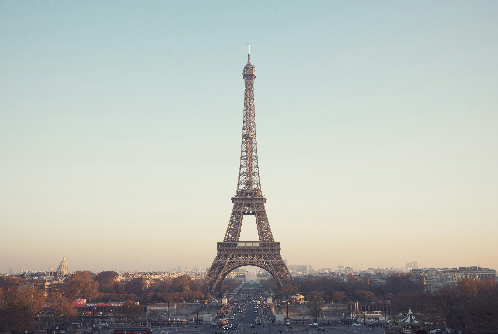
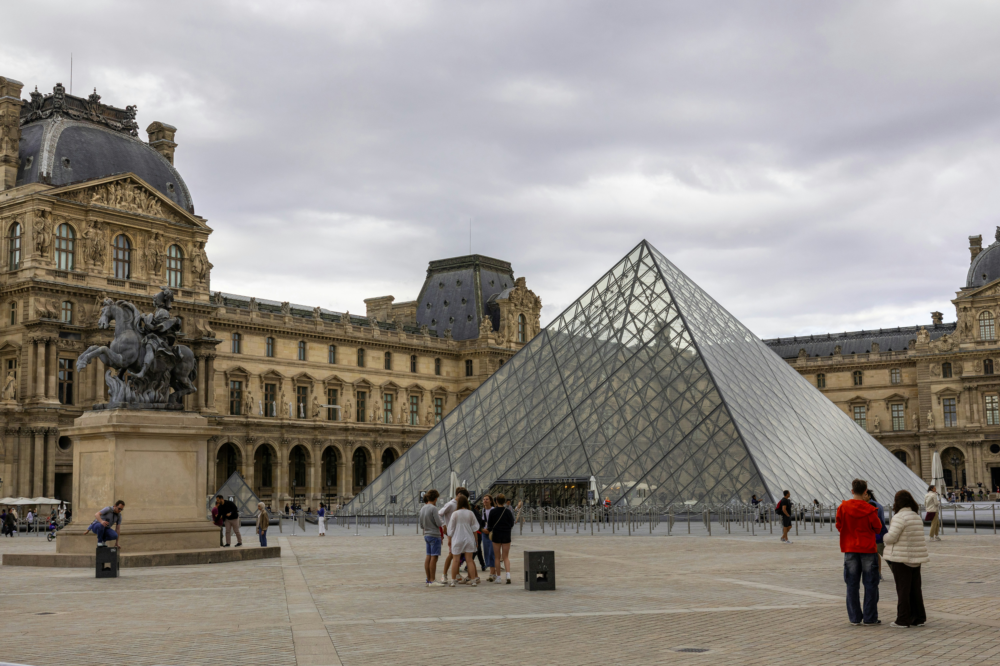

visit Paris and enjoy the trip

The Eiffel Tower is the undisputed symbol of Paris, standing 330 meters tall and offering unparalleled views of the city. Built for the 1889 World's Fair, this iron lattice masterpiece was initially criticized but has become the world's most visited paid monument. You can take the elevator to the second floor or, for the adventurous, climb the 674 steps to experience the structure's engineering marvel up close.
The tower sparkles every hour after sunset for five minutes, creating a magical atmosphere perfect for evening visits. Book tickets online in advance to skip the often lengthy queues. The Trocadéro Gardens across the Seine offer the best photo opportunities of the tower. After your visit, stroll through the nearby Champ de Mars park for a picnic with a view, or explore the charming streets of the 7th arrondissement with their elegant Haussmann buildings, boutiques, and authentic bistros.

The Louvre is the world's largest art museum and a historic monument in Paris, housing approximately 38,000 objects from prehistory to the 21st century. While the Mona Lisa draws massive crowds, the museum's true treasures include the Venus de Milo, Winged Victory of Samothrace, and masterpieces by Vermeer, Caravaggio, and Delacroix. The former royal palace itself is a work of art, with stunning gilded ceilings, grand staircases, and the modern glass pyramid entrance designed by I.M. Pei.
It's impossible to see everything in one visit, so plan your route based on your interests - Egyptian antiquities, French paintings, Islamic art, or decorative arts. Wednesday and Friday evenings offer extended hours with fewer crowds. The nearby Tuileries Garden provides a perfect respite after museum fatigue, with tree-lined paths, fountains, and outdoor cafes. Don't miss the underground shopping mall Carrousel du Louvre, and consider visiting the smaller, equally impressive Musée d'Orsay in a converted railway station for Impressionist masterpieces.

Montmartre is Paris's bohemian hilltop village, crowned by the white-domed Sacré-Cœur Basilica that offers panoramic views across the entire city. This artistic neighborhood was once home to Picasso, Van Gogh, and Toulouse-Lautrec, and still retains its creative spirit with artists painting portraits in Place du Tertre and street performers entertaining visitors on cobblestone squares.
Explore the charming narrow streets lined with ivy-covered houses, vintage shops, and intimate bistros that seem frozen in time. Visit the Moulin Rouge cabaret with its iconic red windmill, walk along Rue Lepic where Amélie was filmed, and discover hidden vineyards that produce wine within city limits. The Wall of Love features "I love you" written in 250 languages, perfect for romantic photos. Take the funicular railway to avoid the steep stairs, or embrace the climb through winding streets discovering hidden gems like Le Consulat café and the Salvador Dalí museum along the way.